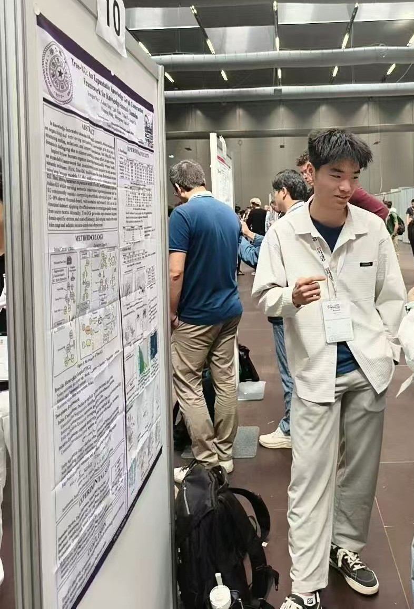

I am a third-year undergraduate in the Department of Computer Science and Technology at
Tsinghua University.
My research focuses on Generative AI, Large Language Model Reasoning, and Knowledge Graph Automation.
Research Interests
- Large Language Model Reasoning and Reinforcement Learning
- Diffusion Models
- Knowledge Graph Automation
Publications
-
Tree-KG: An Expandable Knowledge Graph Construction Framework for Knowledge-intensive Domains
ACL 2025 (Poster)
-
Impromptu VLA: Open Weights and Open Data for Driving Vision-Language-Action Models
NeurIPS 2025 (Poster)
Honors & Awards
- Wang Dazhong Scholarship, Tsinghua University (2024)
- Member of Spark Program (理事会成员), 2025
- Leader, Academic Talent Program (学推计划 A 类), 2025
- PI, Beijing Natural Science Foundation "启研" Undergraduate Program (2025)
Leadership
- Class Monitor (CS Class 31): Organized academic and cultural events
- Vice Minister, Student Union Rights Development Dept.
- Vice Chair, Student Science Association Innovation Dept.
- Recognized as Outstanding Communist Youth League Member (department & university level)